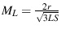
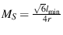
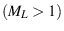
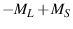
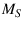

Next: Mesh Improvement Up: Mesh Generation Previous: Two dimensional meshing Contents
In three dimensions, GRUMMP follows Shewchuk's scheme [16], except that again we exercise more precise control over cell size and grading.
In concept, GRUMMP creates an initial tetrahedralization in much the same way as an initial triangulation is created in 2D: all vertices of the surface discretization are inserted into a mesh inside a large box, then the surface is recovered and tetrahedra outside the domain are removed. The difficulty lies in the second step, “the surface is recovered”. In two dimensions, swapping alone is adequate. In three dimensions, this is not always true. In his thesis, Shewchuk shows that a surface mesh for which spheres protecting boundary segments and triangles are point-free must have a constrained Delaunay tetrahedralization; that is, that the surface can be recovered. In practice, this can require insertion of a significant number of points, although heuristics can improve significantly on the sometimes dismal requirements of theory. This is currently still a weak spot in GRUMMP: surface recovery is neither as efficient nor as robust as it should be, with particular challenges for surface meshes with small angles.
Following Ruppert, Shewchuk defines a boundary segment as an edge present in the input geometry. If a boundary segment is divided into parts by subsequent point insertion, each part is called a boundary subsegment. Shewchuk also defines a boundary facet as a planar polygonal surface in the input, bounded by boundary segments. When a boundary facet is divided, either by triangulation or addition of points in its interior, the parts are referred to as boundary subfacets. A triangular boundary subfacet is encroached if a point lies within the equatorial sphere of the triangle: the unique sphere having the circumcircle of the triangle at its equator. A boundary subsegment is encroached if a point lies within the unique sphere that has the subsegment as its diameter.
Shewchuk's scheme can be summarized (minus some details) as follows (including GRUMMP's addition of size and grading control, as described in two dimensions):
GRUMMP implements Shewchuk's scheme by using a priority queue. Tetrahedra
are given a priority based on size and shape. For each tetrahedron,
a size measure
    
Encroached boundary facets and boundary segments are also included in the queue, with priorities set to large negative values so that traversing the queue from lowest numerical priority value to highest follows the insertion rules described above.
Watson insertion is used in 3D as well as in 2D, and encroached boundary entities can be identified easily before the mesh is changed. New encroached entities are added the insertion queue (with a priority slightly less urgent than other similar encroached entities, to prevent infinite recursion). Before insertion actually occurs, a check is done to ensure that the entity at the head of the queue (be it a tetrahedron, a boundary triangle, or a boundary segment) is the one for which insertion was originally requested. If it is, insertion proceeds. If not, GRUMMP attempts to split the entity now at the head of the queue.
The queue is built and manipulated (including calls for insertion and for adding new entities to the queue) by code found in src/base/InsertionQueue.cxx and src/base/WatsonInfo.cxx. Three-dimensional Watson insertion code is found in src/3D/InsertWatson3D.cxx.